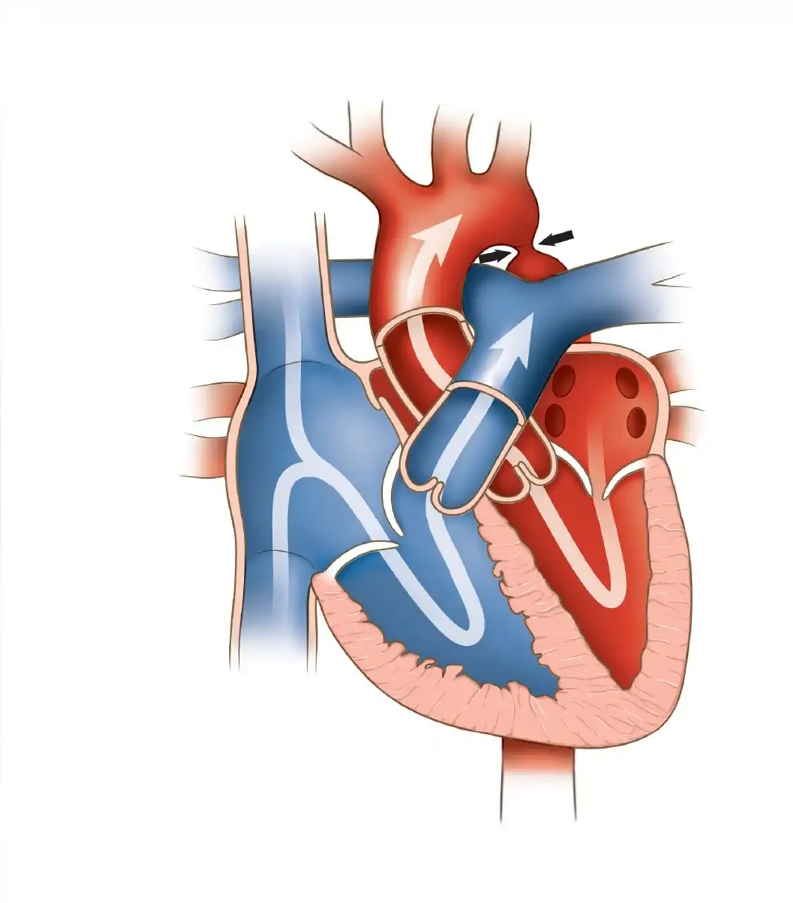

Understanding Causes, Symptoms, and Treatment Options

Coarctation of the Aorta is a congenital condition where a portion of the aorta is narrowed, leading to restricted blood flow to the lower part of the body. This can result in high blood pressure before the narrowing and inadequate blood flow beyond it. If untreated, it may cause severe complications, including heart failure or stroke.
Symptoms of Coarctation of the Aorta can vary depending on the severity of the narrowing. Common symptoms include:
Coarctation of the aorta is primarily a congenital condition, meaning it develops before birth. However, certain factors and conditions can increase its likelihood:
The treatment for Coarctation of the Aorta depends on the severity and the patient's overall health. Options include:
If left untreated, Coarctation of the Aorta can lead to serious complications, including:
Recovery from treatment depends on the type of intervention:
Long-term follow-up is essential to monitor blood pressure and ensure the treated area remains open. Lifestyle changes, such as a heart-healthy diet and regular exercise, are often recommended to prevent complications.
Coarctation of the Aorta is a serious condition that requires prompt diagnosis and treatment. With advances in minimally invasive techniques and surgical options, most patients can lead healthy lives post-treatment. Regular follow-ups and blood pressure management are key to long-term success.